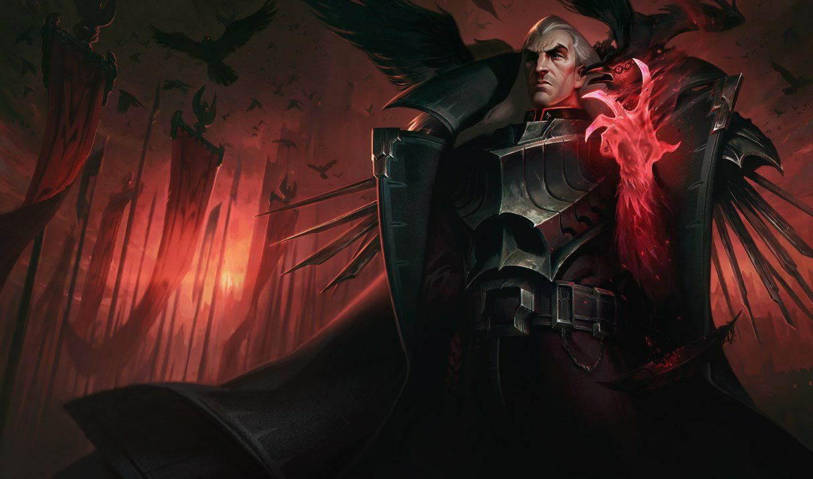

챔피언
스웨인
- 능력치
- 스킬
- 스킨

능력치
체력 525(+85) 1970
체력 재생 7.0(+0.65) 18.0
마나 468(+28.5) 952.5
마나 재생 8.0(+0.8) 21.6
공격력 58(+2.7) 103.9
공격 속도 0.625(+2.11%) 0.849
방어력 22.72(+4) 90.72
마법 저항력 30(+0.5) 38.5
사거리 525(+0) 525
이동 속도 325(+0) 325
스킬
패시브 - 굶주린 새떼(Ravenous Flock)
Q - 죽음의 손길(Death's Hand)
W - 제국의 눈(Vision of Empire)
E - 속박명령(Nevermove)
R - 악의 승천(Demonic Ascension) / 악의 불길(Demonflare)
스킨
대단한 스킨!!!